Docmost User Guide¶
The Docmost User Guide is a comprehensive guide for end users that describes a collaborative wiki platform.
Table of Contents¶
- Introduction to Docmost
- Getting started
- Managing workspaces
- Managing spaces
- Managing groups
- Managing pages
Introduction to Docmost¶
Docmost is an open-source collaborative wiki that provides easy and robust content creation and real-time collaboration.
Topics:
Overview¶
Docmost allows multiple users to work on the same page in real time without overwriting the content of other users. It is an open-source collaborative wiki that provides an alternative to Notion and Confluence. You can use Docmost to manage a wiki, knowledge base, or even project documentation.
Docmost allows you to create, collaborate and share knowledge with dedicated collaborators or members. Create areas of collaboration, or Spaces, for different teams, projects or departments with defined permission levels for each individual member or group of members. You can also publicly share specific pages, allowing anyone with a link to view them.
Using a rich text editor with built-in support for multiple diagramming tools, you can easily create highly professional and visually appealing content in Docmost. You can also import and export pages in Markdown and HTML formats.
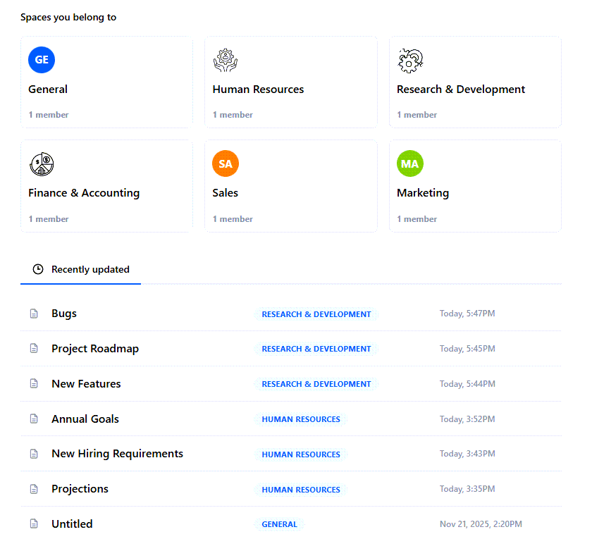
Workspaces, spaces, and pages¶
In Docmost, a workspace is the top-level entity for organizing your documentation and collaboration efforts. It includes all your content, user roles, and permissions.
Within a workspace, you can create multiple spaces. Spaces are dedicated, organized areas within your workspace that group together pages, documents, permissions, and members by project, team, or purpose.
Within a space, you can create and manage individual documents, or pages, which contain the content itself.

Example: Workspaces, spaces, and pages¶
For example, you want to create a wiki that holds content related to your organization, divided by departments.
Here's what you do:
- Create a workspace and call it the name of your organization, such as Acme Corp.
- Within your workspace, create a space for each department, such as HR, R&D, and Finance.
- Within each space, create pages related to the activities in the department, such as Annual Goals, Dev Roadmap, and Planning & Analysis.
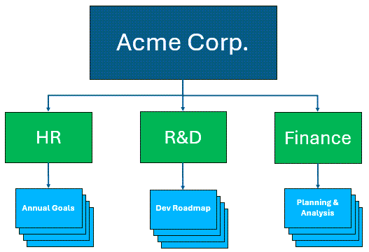
Key features¶
- Collaborative real-time, rich text editor: Work together with other users on the same pages in real time using a rich text editor.
- Highly organized collaboration areas: Create spaces to organize your content by team, projects, or departments for easy and targeted collaboration.
- Permissions management: Control access to content by defining permission levels for individual users or groups of users, simplifying access control across your workspace.
- History and version control: Track all changes with a comprehensive version history, and if needed, restore past versions of pages.
- Optimized search functionality: Find the information you need quickly and easily with powerful search capabilities.
- File import and export integration: Import and export pages in Markdown and HTML formats.
Target audience¶
This guide is intended for users who want to create and share content in a wiki format and collaborate with other users.
Getting started¶
Set up your account for the cloud-hosted version of Docmost. Then, set up your profile and preferences.
Topics:
Set up your account¶
Set up your account for Docmost, which provides you with web-based, thin client access through your browser.
Note: To install the enterprise version of Docmost, refer to the Docmost enterprise installation instructions.
Procedure
-
To create your workspace, go to the Create workspace screen.
-
On the Create workspace screen, do one of the following:
-
Select Signup with Google and select an existing Google account.
-
Enter your name, email, and password, and select Create workspace.
-
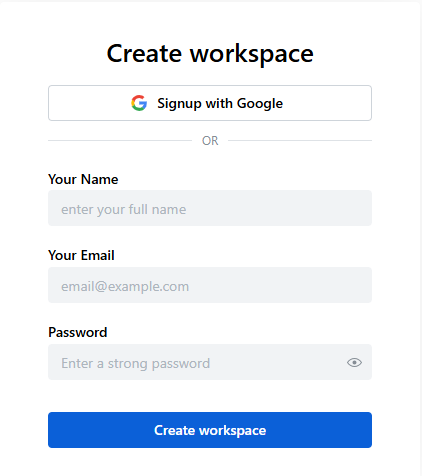
As soon as you create your workspace, the system displays the Docmost Home screen. By default, it creates a General space and adds you as the first member.

Set your profile settings and preferences¶
After setting up your Docmost account, define your profile settings and preferences.
Procedure
- From the
 My workspace drop-down list, select My profile.
My workspace drop-down list, select My profile.

- On the My Profile page, update or set any relevant fields.
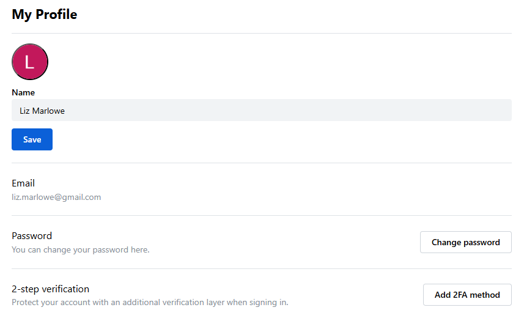
| Field | Description |
|---|---|
| Name | Update your profile name. |
| Update your email address. | |
| Password | Update your password. |
| 2-step verification | Optional. Select Add 2FA method and follow the instructions to set up the 2-step authentication method. |
- From the My workspace drop-down list, select My preferences.

- On the My Preferences page, complete the fields.

| Field | Description |
|---|---|
| Theme | Select the color scheme used in the application: Light, Dark, or System settings (default color scheme). |
| Language | Set the language used on the user interface. Docmost supports 12 languages. |
| Full Page Width | Set the page width of the application. |
| Default page edit mode | Select one of the following:
|
Managing workspaces¶
Create and customize your workspace, which is the top-level entity for organizing your content, user roles, and permissions. After creating your workspace, invite others to collaborate within it.
Topics:
- Define workspace settings
- Invite members to a workspace
- Resend invitation to a member
- Revoke invitation to a member
- Delete a member from a workspace
Define workspace settings¶
Customize the default workspace according to your needs. You can change the icon, name, and hostname for your workspace.
Procedure
- From the My workspace drop-down list, select Workspace settings.
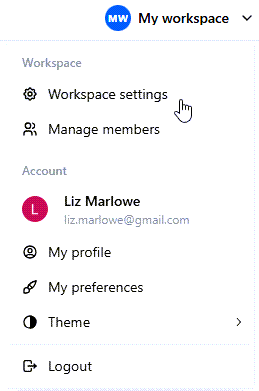
- On the General screen, complete the fields.

| Field | Description |
|---|---|
| Icon | To change the default icon, click the icon and select Upload image. Then, browse and select the icon you want. |
| Name | To change the name of your workspace, edit the text in this field. For example, if you want your workspace to include content for your organization, change this value to the name of your organization. |
| Hostname | To change your hostname, select Change hostname. Change the name of your hostname, and select Change hostname again. (You cannot change the domain name, .docmost.com.) |
- Select Save.
The system updates your workspace settings in the application.
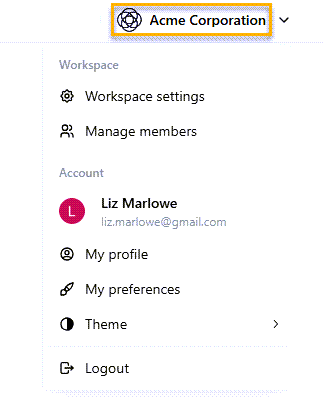
Invite members to a workspace¶
Invite people to collaborate in your workspace. Assign the invited members to either an Admin or Member role. In addition, assign the members to groups to which you want them to have access in your workspace.
Procedure
- From your workspace drop-down menu, select Manage members.
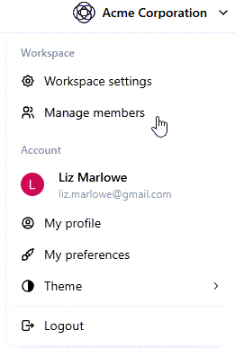
💡 Tip: Alternatively, from the left pane, under Settings and Workspace, select Members.
-
On the Members page, select Invite members.
-
On the Invite new members screen, complete the fields.

| Field | Description |
|---|---|
| Invite by email | Enter the email addresses of the people with whom you want to collaborate. After each email address, type a comma or enter a space. You can enter up to 50 email addresses. |
| Select role | Select one of the following roles for all selected users:
|
| Add to groups | Enter the groups for which you want the invited members to have access. (If you have not created any groups yet, leave this field blank. You can add members to groups at a later time.) |
💡 Tip: If you want to assign different roles to different members, send one invitation for members for whom you want to assign the same role. Then, send a different invitation for members for whom you want to assign a different role.
- Select Send invitation.
The system sends an email invite to all valid email addresses.
- On the Members page, on the Pending tab, view all invited members who still need to accept their invitation.

| Field | Description |
|---|---|
| Email of the member. | |
| Role | Role or set of permissions assigned to the member (either Admin or Member). For details about Admin and Member roles, see Invite members to a workspace. |
| Date | Date when the invitation was sent. (If sent less than 24 hours ago, the system displays the amount of time passed since the invitation was sent. For example, 45 minutes ago.) |
| ... | Resend or revoke the invitation for the invited member. |
- On the Members page, on the Members tab, view all invited members who have accepted their invitation.

| Field | Description |
|---|---|
| User | Name and email of the member. |
| Status | Status of the member, which can be either Active or Inactive. Inactive members have not logged into the workspace for at least 30 days. |
| Role | Role of the member, which can be one of the following:
|
| ... | Deletes the member. |
Resend invitation to a member¶
After sending an invitation to a member, you can resend the invitation. This is helpful if you have not received a response from the member.
Procedure
-
From your workspace drop-down menu, select Manage members.
-
On the Members page, select the Pending tab.
-
For the member for whom you want to resend the invitation, click the three dots next to their name (...), and select Resend invitation.

The system resends the invitation to the selected member.
Revoke invitation to a member¶
After sending an invitation to a member, you can revoke the invitation. This is helpful if you accidentally send an invitation to the wrong person.
Procedure
-
From your workspace drop-down menu, select Manage members.
-
On the Members page, select the Pending tab.
-
For the member for whom you want to resend the invitation, click the three dots next to their name (...), and select Revoke invitation.

- At the system prompt, select Revoke to confirm deleting the invitation.
The system revokes the invitation to the selected member, and removes the invited member from the Pending tab.
Delete a member from a workspace¶
You can delete a member from a workspace.
Procedure
-
From your workspace drop-down menu, select Manage members.
-
On the Members page, select the Members tab.
-
For the member you want to delete from the workspace, click the three dots next to their name (...), and select Delete member.
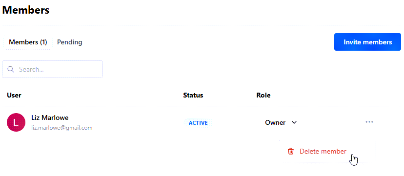
- At the system prompt, select Delete to confirm deleting the member.
The system deletes the member from the workspace. They no longer appear under the Members tab.
Managing spaces¶
Create spaces, which are dedicated, organized areas within your workspace that group together documents, permissions, and collaborators by project, team, or purpose. You can add members to spaces and manage their permissions. You can also export spaces for backup, migration, or offline use.
Topics:
- Create a space
- Edit space settings
- Add members to a space
- Remove a member from a space
- Export a space
- Delete a space
Create a space¶
Within your workspace, create a new space to group together documents, permissions, and collaborators by project, team, or purpose.
Procedure
-
From your workspace drop-down menu, select Workspace settings.
-
From the left pane, under Settings and Workspace, select Spaces.
-
From the Spaces screen, select Create space.
-
On the Create space screen, complete the fields.
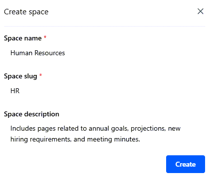
| Field | Description |
|---|---|
| Space name | Enter the name of the space. For example: Human Resources. |
| Space slug | Enter the slug for the space, which identifies the page in a unique, user-friendly way. For example: HR. |
| Space description | Enter the purpose of the space. For example: Includes pages related to annual goals, projections, new hiring requirements, and meeting minutes. |
- Select Create.
The system creates the new space. You are now the space admin with Full Access permissions, including adding and removing members, and editing content in the space.

Edit space settings¶
After creating a space, you can edit a space's settings.
Procedure
-
From your workspace drop-down menu, select Workspace settings.
-
From the left pane, under Settings and Workspace, select Spaces.
-
On the Spaces screen, select the space for which you want to edit settings.

-
On the following screen, select the Settings tab.
-
From Settings, update the Icon, Name, Slug, or Description fields.
For more information on these fields, see Create a space.
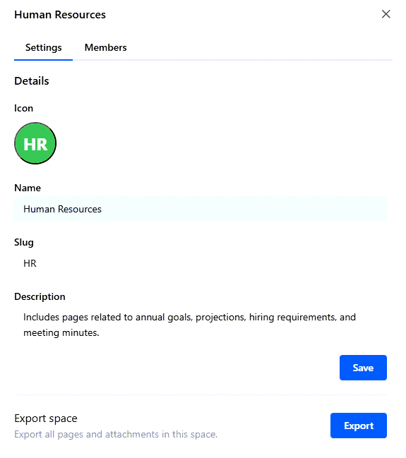
- Select Save.
The system updates the settings.
Add members to a space¶
Add individual members to a space for collaboration. Set specific permission levels for each member.
💡 Tip: If you want to add multiple users to a space simultaneously, create a group and then add the entire group as a space member.
Procedure
-
From your workspace drop-down menu, select Workspace settings.
-
From the left pane, under Settings and Workspace, select Spaces.
-
On the Spaces screen, select the space for which you want to add members.
-
On the following screen, select the Members tab.
-
From Members, select Add space members.
-
On the Add space members screen, complete the fields.

| Field | Description |
|---|---|
| Add Members | Search for and select the users you want to add as members to the space. |
| Select role | Select the role or set of permissions you want for the selected members:
|
- Select Add.
The system adds the selected users as members to the space with the defined role.
💡 Tip: If you want to assign different roles to different members, complete these steps for members for whom you want to assign the same role. Then, repeat these steps for members for whom you want to assign a different role.
Remove a member from a space¶
You can remove a member from a space.
Procedure
-
From your workspace drop-down menu, select Workspace settings.
-
From the left pane, under Settings and Workspace, select Spaces.
-
On the Spaces screen, select the space from which you want to remove a member.
-
On the following screen, select the Members tab.
-
For the member you want to remove from the space, click the three dots next to their name (...), and select Remove space member.
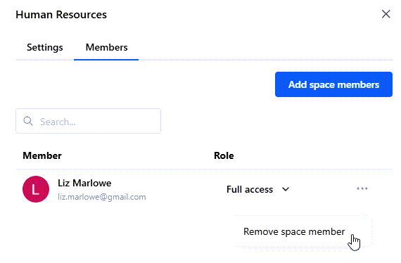
- At the system prompt, select Remove to confirm removing the member from the space.
The system removes the member from the space. They no longer appear under the Members tab.
Export a space¶
You can export a space in both Markdown and HTML formats for backup, migration, or offline use. Exporting a space allows you to have external access to all content within a space, including all pages and attachments.
Procedure
-
From your workspace drop-down menu, select Workspace settings.
-
From the left pane, under Settings and Workspace, select Spaces.
-
On the Spaces screen, select the space you want to export.
-
On the following screen, select the Settings tab.
-
From the Export space section on this screen, select Export.

- On the Export space screen, complete the fields.

| Field | Description |
|---|---|
| Format | Select the format in which you want to export the space: either Markdown or HTML. |
| Include attachments | To include all attachments in the space in the exported file, move the toggle to the On position. |
-
Select Export.
-
Save the .zip file locally.
Your exported file has been saved successfully.
Delete a space¶
If you no longer need a space, you can delete it. For example, you created a space for a small group of members and they have merged into a bigger group that belongs to a different space.
:warning: Deleting a space permanently removes all pages, comments, attachments and permissions associated with the space. You cannot undo this action.
Procedure
-
From your workspace drop-down menu, select Workspace settings.
-
From the left pane, under Settings and Workspace, select Spaces.
-
From the Spaces screen, select the space you want to delete.
-
On the following screen, select the Settings tab.
-
From the Delete space section on this screen, select Delete.

- At the system prompt, type the name of the space you want to delete and select Confirm to delete the space.
The system deletes the space, including all of its pages, comments, attachments, and permissions.
Managing Groups¶
Create groups, which allow you to manage user permissions for multiple users simultaneously. Instead of assigning roles and privileges to individual users, assign them to a group, simplifying access control across your workspace.
All users are assigned to a default group called Everyone.
[!NOTE] Only users with Admin or Owner roles can create, edit, and delete groups.
Topics:
- Create a group
- Edit group settings
- Grant group access to a space
- Add a member to a group
- Remove a member from a group
- Delete a group
Create a group¶
Create a group to manage user permissions for multiple users simultaneously.
Procedure
-
From your workspace drop-down menu, select Workspace settings.
-
From the left pane, select Groups.
-
From Groups, select Create group.
-
On the Create group screen, complete the fields.

| Field | Description |
|---|---|
| Group name | Enter the name of the group. For example: Core Engineering Team. |
| Group description | Enter a description for the group. For example: Developers working on the core features for the NovaBuild release. |
| Add group members | Search for and enter the members you want to add to the group. You can also add members at a later time. |
- Select Create.
On the Manage Group screen, the system displays the group.
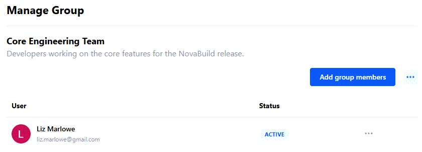
Edit group settings¶
After creating a group, you can edit the group's name and description. This is helpful if the name or purpose of the group changed after you created it.
Procedure
-
From your workspace drop-down menu, select Workspace settings.
-
From the left pane, select Groups.
-
From Groups, select the group you want.
-
On the Manage Group screen, from the three dots (...) on the top right, select Edit group.
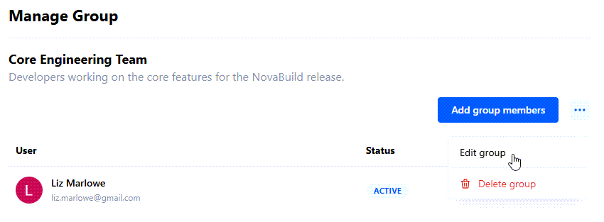
- On the Edit group screen, update the Group name and Group description fields and select Save.

The system saves your updates.
Grant group access to a space¶
Instead of adding individual members to a space, you can add groups. Assign a specific set of permissions to the entire group. Groups make it easy to grant multiple users access at the same time. In addition, creating groups ensures members have the correct permissions for working in the space.
Procedure
-
From your workspace drop-down menu, select Workspace settings.
-
From the left pane, under Settings and Workspace, select Spaces.
-
On the Spaces screen, select the space for which you want to grant group access.
-
From the Members tab, select Add space members.
-
On the Add space members screen, complete the fields.
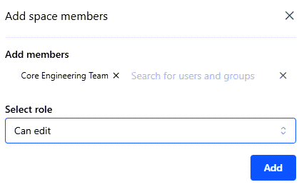
| Field | Description |
|---|---|
| Add members | Search for and select the group to which you want to grant access to the space. |
| Select role | Select one of the following permission levels:
|
- Select Add.
The system adds the group as a member to the space.

[!NOTE] If a user has been added as an individual member and as a group member to the same space with different permission levels, the highest permission level applies. For example, Alex Smith has been added as a member to the space, Research & Development, with Can View permissions. Alex has also been added to the group, Core Engineering Team, which has Can Edit permissions to this space. Therefore, Alex has edit privileges for this space.
Add a member to a group¶
After creating a group, you can easily add a member to the group.
Procedure
-
From your workspace drop-down menu, select Workspace settings.
-
From the left pane, select Groups.
-
From Groups, select the group you want.
-
On the Manage Group screen, select Add group members.
-
From the Add group members field, search for and enter the users you want to add to the group.
-
Select Add.

The system adds the member to the group.
Remove a member from a group¶
If needed, you can easily remove a member from the group.
Procedure
-
From your workspace drop-down menu, select Workspace settings.
-
From the left pane, select Groups.
-
From Groups, select the group you want.
-
On the Manage Group screen, find the member you want to remove.
-
From the three dots (...) next to their name, select Remove group member.

- To confirm removing the member from the group, select Delete.
The system removes the member from the group.
Delete a group¶
If needed, you can delete a group.
Procedure
-
From your workspace drop-down menu, select Workspace settings.
-
From the left pane, select Groups.
-
From Groups, select the group you want to delete.
-
On the Manage Group screen, from the three dots (...) on the top right, select Delete group.
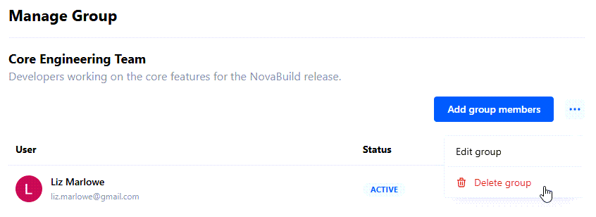
- To confirm deleting the group, select Delete.
The system deletes the group.
Managing pages¶
Within a space, create and manage individual documents, or pages, which contain the content itself. Each page contains specific content for the space, such as a department's budget, project roadmap, or annual goals.
Topics:
- Create a page
- Move a page to a different space
- Copy a page to a different space
- Duplicate a page to the same space
- Import a page
- Export a page
Create a page¶
Create a page, which contains content within a space. For example, for the Human Resources space, create a page that describes the department's annual goals.
Procedure
- From the Home page, select the space for which you want to create a page.
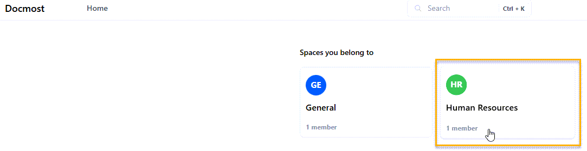
- From the left pane, select + New page.
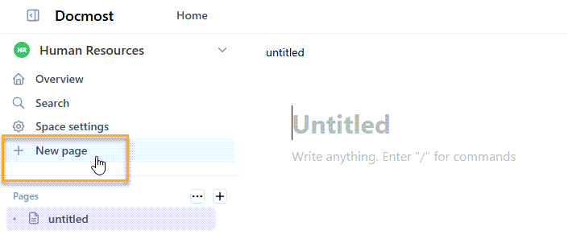
-
On the new page, type a title for the page, such as Annual Goals.
-
Add content to the page.
You can use the editing bar to apply headings, alignment, text formatting, links, and comments.
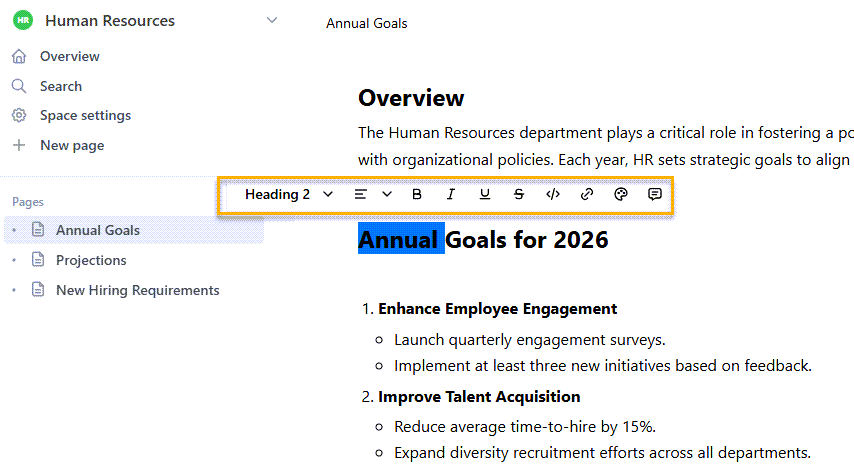
- Once you have added content, you can share the page with other members of the space, manage comments, and do other actions related to the page (including but not limited to move, export, print, and view page history).

| Number | Description |
|---|---|
| 1 | Sets the page edit mode, as described in Set your profile settings and preferences. |
| 2 | Shares the page with other members of the space. |
| 3 | Displays the Comments pane. |
| 4 | Displays the Table of Contents of the page (defined by applied headings). |
| 5 | Provides additional options, including:
|
| 6 | Displays Open and Resolved comments on the page. |
| 7 | Allows you to Edit, Resolve, and Delete comments on the page. |
Move a page to a different space¶
You can easily move a page to a different space. This is helpful if the content on the page is more suitable for a different space.
Procedure
-
From the Home page, select the space that contains the page you want to move.
-
From the list of pages displayed in the space, select the page you want to move.
-
From the left pane, hover over the page, select the three dots, and select Move.

- From Move page, select the space to which you want to move the page and select Move.
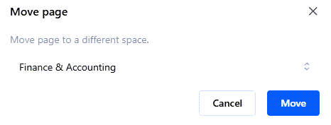
The system moves the page to the selected space.
Copy a page to a different space¶
You can easily copy a page to a different space. This allows you to include the same content in multiple spaces, if needed.
Procedure
-
From the Home page, select the space that contains the page you want to copy.
-
From the list of pages displayed in the space, select the page you want to copy.
-
From the left pane, hover over the page, select the three dots, and select Copy to space.
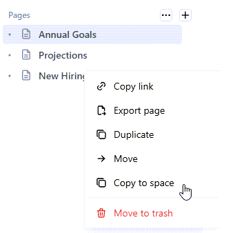
- From Copy page, select the space to which you want to copy the page and select Copy.

The system copies the page to the selected space.
Duplicate a page to the same space¶
You can duplicate a page to the same space. This is helpful if you want to create a page that is similar to an existing page with modifications. Duplicate the page, and then modify the duplicated page as needed.
Procedure
-
From the Home page, select the space that contains the page you want to duplicate.
-
From the list of pages displayed in the space, select the page you want to duplicate.
-
From the left pane, hover over the page, select the three dots and select Duplicate.

The system duplicates the page in the same space, naming it: Copy of {page name}. For example, if you duplicated a page called Annual Goals, the duplicated page is named: Copy of Annual Goals.

Import a page¶
You can import pages to a specific space in HTML and Markdown formats. You can also import pages from Notion and Confluence. This allows you to add pages sourced from external content in your space, and share the content with all space members.
Procedure
-
From the Home page, select the space for which you want to import a file.
-
From the left pane, hover over the Pages heading, select the three dots, and select Import pages.
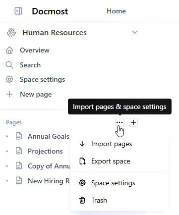
-
From Import pages, select the type of page you want to import:
-
Markdown: Imports a page in Markdown format.
-
HTML: Imports a page in HTML format.
-
Notion: Imports a Notion page.
-
Confluence: Imports a Confluence page.
-
Select Upload file, and select the page you want to upload (in the selected format).

The system imports the file into the selected space.
Export a page¶
You can export a page in either Markdown or HTML format for external use. You can select whether to include all subpages and attachments in the exported file.
Procedure
-
From the Home page, select the space for which you want to export a page.
-
From the list of pages displayed in the space, select the page you want to export.
-
From the left pane, hover over the page, select the three dots, and select Export page.
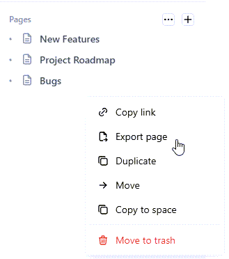
- On Export page, complete the fields.
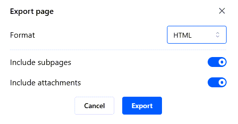
| Field | Description |
|---|---|
| Format | Select whether to export the file in Markdown or HTML format. |
| Include subpages | To include all subpages in the exported file, toggle this setting to the On position. |
| Include attachments | To include all attachments in the exported file, toggle this setting to the On position. |
-
Select Export.
-
Save the exported file as a .zip file in the selected location.